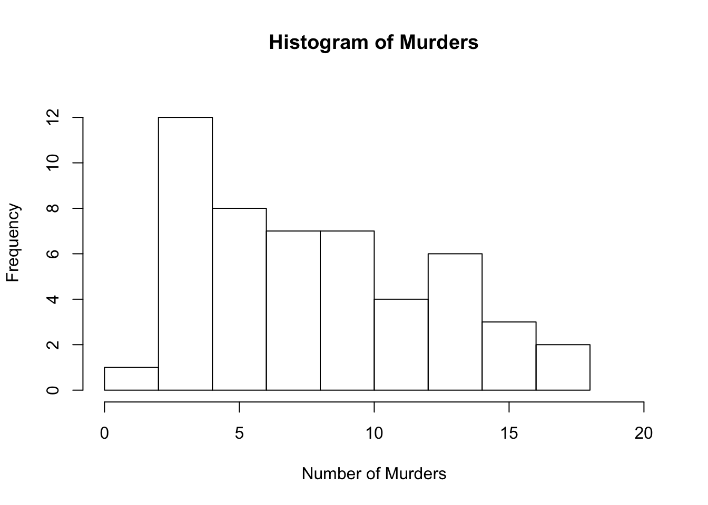
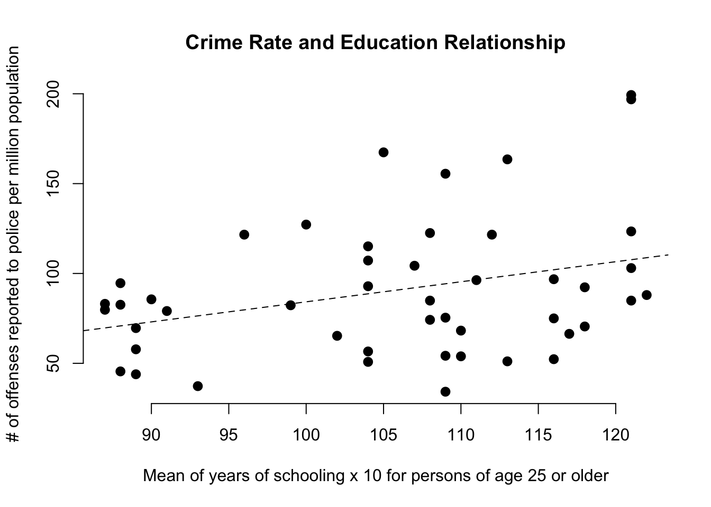
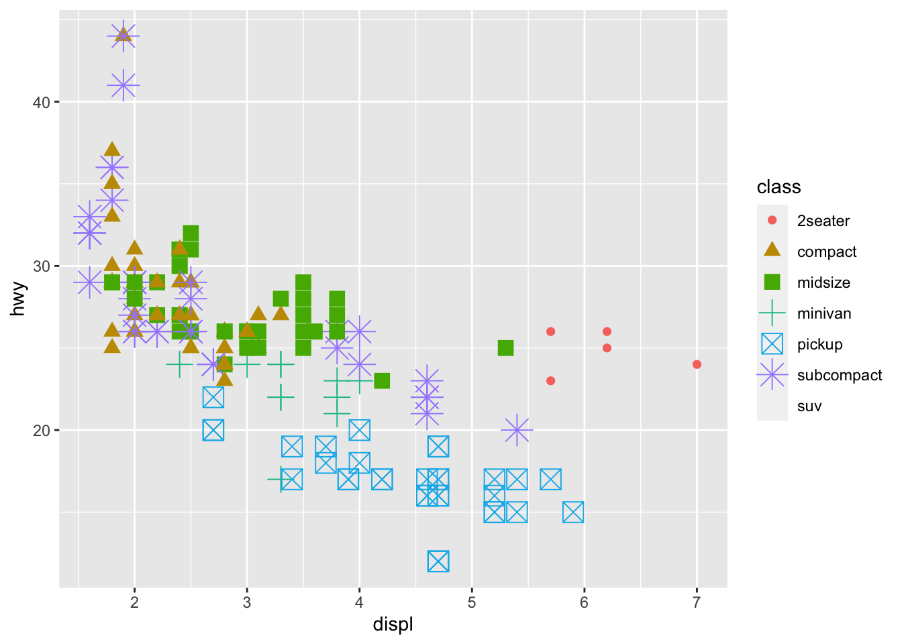
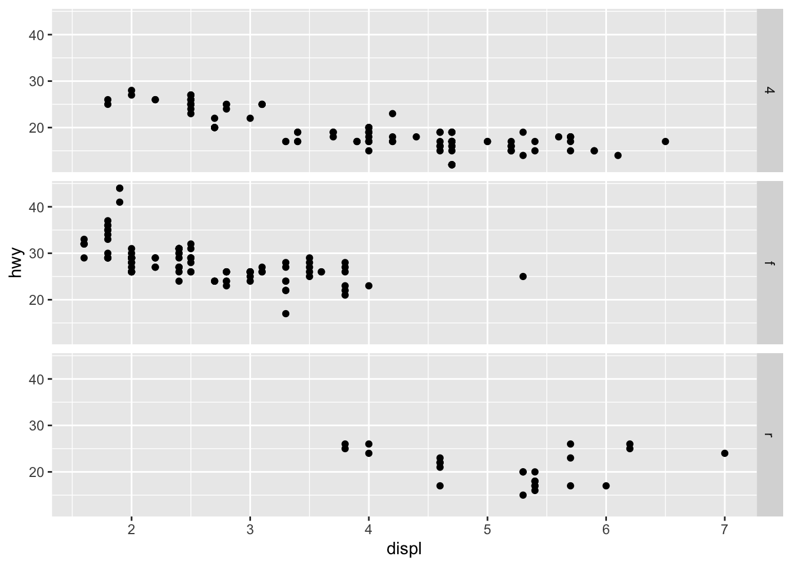
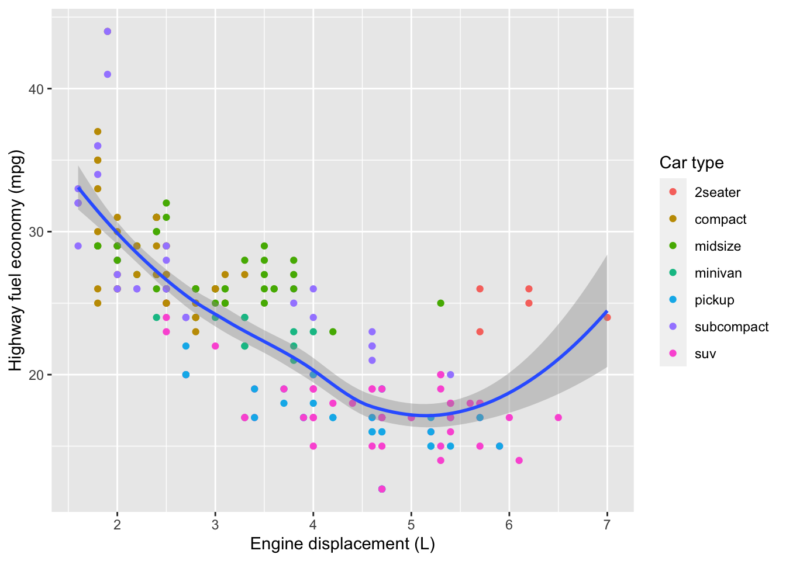
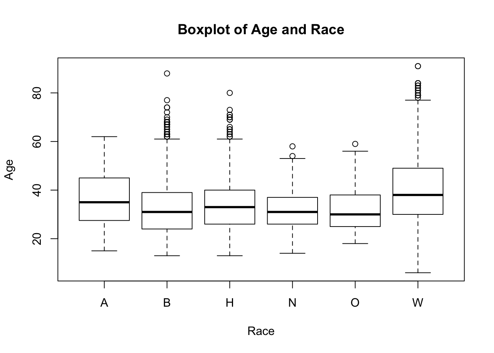

Journal
This page will contain all the assignments you submit for the class.
Instructions for all assignments
I want you to submit your assignment as a PDF, so I can keep a record of what the code looked like that day. I also want you to include your answers on your personal GitHub website. This will be good practice for editing your website and it will help you produce something you can keep after the class is over.
Download the Assignment1.Rmd file from Canvas. You can use this as a template for writing your answers. It’s the same as what you can see on my website in the Assignments tab. Once we’re done with this I’ll edit the text on the website to include the solutions.
On RStudio, open a new R script in RStudio (File > New File > R Script). This is where you can test out your R code. You’ll write your R commands and draw plots here.
Once you have finalized your code, copy and paste your results into this template (Assignment 1.Rmd). For example, if you produced a plot as the solution to one of the problems, you can copy and paste the R code in R markdown by using the
``{r} ```command. Answer the questions in full sentences and Save.Produce a PDF file with your answers. To do this, knit to PDF (use Knit button at the top of RStudio), locate the PDF file in your docs folder (it’s in the same folder as the Rproj), and submit that on on Canvas in Assignment 1.
Build Website, go to GitHub desktop, commit and push. Now your solutions should be on your website as well.
Assignment 1
Collaborators: Natalie Yang.
This assignment is due on Canvas on Monday 9/20 before class, at 10:15 am. Include the name of anyone with whom you collaborated at the top of the assignment.
Problem 1
Install the datasets package on the console below using install.packages("datasets"). Now load the library.
library(datasets)Load the USArrests dataset and rename it dat. Note that this dataset comes with R, in the package datasets, so there’s no need to load data from your computer. Why is it useful to rename the dataset?
dat <- USArrestsIt’s useful to rename the dataset so you know can keep track of which dataset is which - it can stick in your mind more if you rename it. Also, when you’re altering data, it’s best to keep track of the different versions are which (ie which datasets are untouched, etc). Lastly, I wouldn’t want to alter a Base R package dataset, and then save it to my workspace, and have that alter things in the future.
Problem 2
Use this command to make the state names into a new variable called State.
dat$state <- tolower(rownames(USArrests))This dataset has the state names as row names, so we just want to make them into a new variable. We also make them all lower case, because that will help us draw a map later - the map function requires the states to be lower case.
List the variables contained in the dataset USArrests.
colnames(dat)## [1] "Murder" "Assault" "UrbanPop" "Rape"The output is: [1] “Murder” “Assault” “UrbanPop” “Rape” “state”
Problem 3
What type of variable (from the DVB chapter) is Murder?
Answer: A quantitative variable.
What R Type of variable is it?
Answer: Numeric (class(dat$Murder) returns numeric)
Problem 4
What information is contained in this dataset, in general? What do the numbers mean?
Answer: This dataset contains information on Murder, Assault, and Rape per 100,000 residents, by state for all 50 states in the United States.
Problem 5
Draw a histogram of Murder with proper labels and title.
hist(dat$Murder,
main = "Histogram of Murders",
xlim = c(0, 20),
ylim = c(0, 13),
xlab = "Number of Murders",
ylab = "Frequency")
Problem 6
Please summarize Murder quantitatively. What are its mean and median? What is the difference between mean and median? What is a quartile, and why do you think R gives you the 1st Qu. and 3rd Qu.?
mean(dat$Murder)## [1] 7.788median(dat$Murder)## [1] 7.25summary(dat$Murder)## Min. 1st Qu. Median Mean 3rd Qu. Max.
## 0.800 4.075 7.250 7.788 11.250 17.400Mean is the average amount of Murders in all 50 states, while median is the middle state Murder level in the dataset. The 1st quartile shows us that the lowest 25% state Murder rates are under 4.075. The 3rd quartile shows us that for the 50.1-75% of states, which is the block right above the median. We don’t need the 2nd quartile because we have the Median to know that the 25.1-50% of states fall between that number and the 1st quartile. We are given the max as well, which is technically the 4th quartile, and that alongside the 3rd quartile amount gives us all the information we need about distribution of Murder rate in the dataset. The mean is also greater than the median, so the dataset is positively skewed.
Problem 7
Repeat the same steps you followed for Murder, for the variables Assault and Rape. Now plot all three histograms together. You can do this by using the command par(mfrow=c(3,1)) and then plotting each of the three.
par(mfrow=c(3, 1))
hist(dat$Assault,
main = "Histogram of Assaults",
xlim = c(0, 355),
ylim = c(0, 15),
xlab = "Number of Assaults",
ylab = "Frequency")
hist(dat$Murder,
main = "Histogram of Murders",
xlim = c(0, 20),
ylim = c(0, 13),
xlab = "Number of Murders",
ylab = "Frequency")
hist(dat$Rape,
main = "Histogram of Rapes",
xlim = c(0, 52),
ylim = c(0, 15),
xlab = "Number of Rapes",
ylab = "Frequency")What does the command par do, in your own words (you can look this up by asking R ?par)?
Answer: Par splits up our screen so we can see more than one figure in one viewing. In the example above, we used par to split the screen into three horizontal chunks. By changing the second number in the par function, we could also bisect the screen vertically.
What can you learn from plotting the histograms together?
Answer: You can compare frequencies, and you can also see how some crimes (such as Assaults) are committed more than others (e.g. Murders).
Problem 8
In the console below (not in text), type install.packages("maps") and press Enter, and then type install.packages("ggplot2") and press Enter. This will install the packages so you can load the libraries.
Run this code:
library('maps')
library('ggplot2')
ggplot(dat, aes(map_id=state, fill=Murder)) +
geom_map(map=map_data("state")) +
expand_limits(x=map_data("state")$long, y=map_data("state")$lat)What does this code do? Explain what each line is doing.
Answer: This code shows the murder rates graphically. With the entire contiguous US being shown on a map, the code shades states on a light-dark scale based on how high their Murder rate (per 100,000 residents) are. States with lower murder rates are shaded darker, and vice versa for higher ones. We can see states in the PNW and NE regions have lower Murder rates than states in the SE visually with this map.
\[\\[2in]\]
Assignment 2
Instructions: Copy your code, paste it into a Word document, and turn it into Canvas. You can turn in a .docx or .pdf file. Show any EDA (graphical or non-graphical) you have used to come to this conclusion.
Collaborators: Natalie Yang.
Instructions: Copy your code, paste it into a Word document, and turn it into Canvas. You can turn in a .docx or .pdf file. Show any EDA (graphical or non-graphical) you have used to come to this conclusion.
Set your working directory to the folder where you downloaded the data.
Read the data
library(readr)## Warning: package 'readr' was built under R version 3.6.2dat <- read_csv("dat.nsduh.small.1.csv")## Rows: 171 Columns: 7## ── Column specification ───────────────────────────────────────────────────
## Delimiter: ","
## dbl (7): mjage, cigage, iralcage, age2, sexatract, speakengl, irsex##
## ℹ Use `spec()` to retrieve the full column specification for this data.
## ℹ Specify the column types or set `show_col_types = FALSE` to quiet this message.What are the dimensions of the dataset?
dim(dat)## [1] 171 7The dimensions are 171 rows by 7 columns
Problem 2: Variables
Describe the variables in the dataset.
The variables are all numeric. They represent different number ranges, which account for different meanings.For example, the age2 variable represents the respondents age. In some buckets, only the exact age is contain (ie 1 represents the age 12), but in others it represents a range (eg 13 represents ages 26-29).
What is this dataset about? Who collected the data, what kind of sample is it, and what was the purpose of generating the data?
This data set is from the National Survey of Drug Use in 2019. It looks into when respondents first started using drugs/alcohol/nicotine, even if it’s before the legal age. The NSDUH collected the data, and it seems to be a random sample from a large range of ages. This data is meant to reflect drug/alcohol/etc use across the whole country.
names(dat)## [1] "mjage" "cigage" "iralcage" "age2" "sexatract" "speakengl"
## [7] "irsex"The variables are: mjage, cigage, iralcage, age2, sexatract, speakengl, and irsex
Problem 3: Age and gender
What is the age distribution of the sample like? Make sure you read the codebook to know what the variable values mean.
hist(dat$age2,
main = "Histogram of Age",
xlim = c(0, 20),
ylim = c(0, 120),
xlab = "Quantity in Each Age Bucket",
ylab = "Frequency")The age frequency obciously isn’t fully representative of the US population, because it doesn’t have respondents below the age of 12.
Is the sample balanced in terms of gender? If not, are there more females or males?
sum(dat$irsex[dat$irsex == 2])## [1] 160sum(dat$irsex)## [1] 251160 females, 251 respondents in total
This sample isn’t balanced in terms of gender because there are 69 more females than males. This is not representative of the US population, where gender is mostly balanced.
Problem 4: Substance use
For which of the three substances included in the dataset (marijuana, alcohol, and cigarettes) do individuals tend to use the substance earlier?
dat$iralcage[dat$iralcage == 5]## [1] 5 5dat$cigage[dat$cigage == 10]## [1] 10dat$mjage[dat$mjage == 7]## [1] 7There is only one user in the earliest bucket for marijuana and cigarette use. There are two for alcohol use. I am deducing that individuals tend to use alcohol earlier.
Problem 5: Sexual attraction
What does the distribution of sexual attraction look like? Is this what you expected?
dat$sex.attract <- dat$sexatract
dat$sex.attract[dat$sex.attract == 85 | dat$sex.attract == 94 | dat$sex.attract == 97 |
dat$sex.attract == 98 | dat$sex.attract == 99 ] <- NA
hist(dat$sex.attract,
main = "Histogram of Sexual Attraction",
xlab = "Quantity in Each Age Bucket",
ylab = "Frequency")Most people identify as heterosexual, which is what I expected.
What is the distribution of sexual attraction by gender?
tab.sexgender <- table(dat$sex.attract, dat$irsex)
barplot(tab.sexgender,
main = "Stacked barchart",
xlab = "Gender", ylab = "Frequency",
legend.text = rownames(tab.sexgender),
beside = FALSE) # Stacked bars (default)More males identify as straight than females.
Problem 6: English speaking
What does the distribution of English speaking look like in the sample? Is this what you might expect for a random sample of the US population?
hist(dat$speakengl,
main = "Histogram of English Speaking",
xlim = c(1,3),
ylim = c(0, 200),
xlab = "Quantity in Each Age Bucket",
ylab = "Frequency")Mostly everyone is an English speaker, and speaks very well/well, which is what I expected, as this is a national sample coming from the United States, and the official language is English. It would be interesting to look at how many people are native English speakers in the future.
Are there more English speaker females or males?
(in this, I’m using values 1-3 to count as speaking English)
sum(dat$irsex[dat$irsex == 1 & (dat$speakengl == 1 | dat$speakengl == 2 | dat$speakengl == 3)])## [1] 91sum(dat$irsex[dat$irsex == 2 & (dat$speakengl == 1 | dat$speakengl == 2 | dat$speakengl == 3)])## [1] 16091 English speakers are male, and 160 are females. All respondents fall into a English-speaking bucket, and so with the unbalanced gender we saw earlier, there are more female English speakers than male.
\[\\[2in]\]
Assignment 3
Collaborators: Natalie Yang.
This assignment is due on Canvas on Wednesday 10/27/2021 before class, at 10:15 am. Include the name of anyone with whom you collaborated at the top of the assignment.
Submit your responses as either an HTML file or a PDF file on Canvas. Also, please upload it to your website.
Save the file (found on Canvas) crime_simple.txt to the same folder as this file (your Rmd file for Assignment 3).
Load the data.
## setwd("~/Desktop/senior year/crim 250/assignments/assignment 3")
## install.packages("ggpubr")
library(readr)
library(knitr)
library(ggpubr)## Warning: package 'ggpubr' was built under R version 3.6.2## Loading required package: ggplot2## Warning: package 'ggplot2' was built under R version 3.6.2dat.crime <- read_delim("crime_simple.txt", delim = "\t")## Rows: 47 Columns: 14## ── Column specification ───────────────────────────────────────────────────
## Delimiter: "\t"
## dbl (14): R, Age, S, Ed, Ex0, Ex1, LF, M, N, NW, U1, U2, W, X##
## ℹ Use `spec()` to retrieve the full column specification for this data.
## ℹ Specify the column types or set `show_col_types = FALSE` to quiet this message.This is a dataset from a textbook by Brian S. Everitt about crime in the US in 1960. The data originate from the Uniform Crime Report of the FBI and other government sources. The data for 47 states of the USA are given.
Here is the codebook:
R: Crime rate: # of offenses reported to police per million population
Age: The number of males of age 14-24 per 1000 population
S: Indicator variable for Southern states (0 = No, 1 = Yes)
Ed: Mean of years of schooling x 10 for persons of age 25 or older
Ex0: 1960 per capita expenditure on police by state and local government
Ex1: 1959 per capita expenditure on police by state and local government
LF: Labor force participation rate per 1000 civilian urban males age 14-24
M: The number of males per 1000 females
N: State population size in hundred thousands
NW: The number of non-whites per 1000 population
U1: Unemployment rate of urban males per 1000 of age 14-24
U2: Unemployment rate of urban males per 1000 of age 35-39
W: Median value of transferable goods and assets or family income in tens of $
X: The number of families per 1000 earning below 1/2 the median income
We are interested in checking whether the reported crime rate (# of offenses reported to police per million population) and the average education (mean number of years of schooling for persons of age 25 or older) are related.
- How many observations are there in the dataset? To what does each observation correspond?
dim(dat.crime)## [1] 47 14The number of rows (47) correspond to the states in the survey, and the 14 columns relate to each letter in the codebook for these answers. So, the 5th row, column U1 would show the Unemployment rate of urban males per 1000 of age 14-24 in that state.
- Draw a scatterplot of the two variables. Calculate the correlation between the two variables. Can you come up with an explanation for this relationship?
cor(dat.crime$Ed, dat.crime$U2, method = "pearson", use = "complete.obs")## [1] -0.2156816ggscatter(dat.crime, x = "Ed", y = "U2",
add = "reg.line", cor.method = "pearson",
xlab = "Mean of years of schooling", ylab = "Unemployment rate")## `geom_smooth()` using formula 'y ~ x'The correlation function shows a small negative correlation between mean years of school and education. So, as mean years of school increases, the unemployment level decreases. The scatter plot visualizes this relationship, and the regline shows that it is a small level of correlation.
- Regress reported crime rate (y) on average education (x) and call this linear model
crime.lmand write the summary of the regression by using this code, which makes it look a little nicer{r, eval=FALSE} kable(summary(crime.lm)$coef, digits = 2).
crime.lm <- lm(R ~ Ed, data = dat.crime)
summary(crime.lm)##
## Call:
## lm(formula = R ~ Ed, data = dat.crime)
##
## Residuals:
## Min 1Q Median 3Q Max
## -60.061 -27.125 -4.654 17.133 91.646
##
## Coefficients:
## Estimate Std. Error t value Pr(>|t|)
## (Intercept) -27.3967 51.8104 -0.529 0.5996
## Ed 1.1161 0.4878 2.288 0.0269 *
## ---
## Signif. codes: 0 '***' 0.001 '**' 0.01 '*' 0.05 '.' 0.1 ' ' 1
##
## Residual standard error: 37.01 on 45 degrees of freedom
## Multiple R-squared: 0.1042, Adjusted R-squared: 0.08432
## F-statistic: 5.236 on 1 and 45 DF, p-value: 0.02688- Are the four assumptions of linear regression satisfied? To answer this, draw the relevant plots. (Write a maximum of one sentence per assumption.)
plot(dat.crime$Ed, dat.crime$R, pch = 16, cex = 1.3, frame = F,
main = "Crime Rate and Education Relationship",
xlab = "Mean of years of schooling x 10 for persons of age 25 or older",
ylab = "# of offenses reported to police per million population")
abline(crime.lm, h = 0, lty="dashed")
plot(crime.lm, which=1)plot(crime.lm, which=3)plot(crime.lm, which=2)
The linearity assumption is satisfied because the scatterplot ab-line is straight, and the red line from the Residuals vs Fitted graph is flat, which shows us that there is no discernible non-linear trend to the residuals. The independence assumption is satisfied because there are no patterns in the scatter when graphing against Ed or the residuals. The scale-location plot shows us a pretty flat line, which means the errors have constant variance, and the assumption is satisfied. The normality assumption is satisfied, because the QQ plot graph has its residuals mostly following the line, which means there’s a normal distribution (follows the population).
- Is the relationship between reported crime and average education statistically significant? Report the estimated coefficient of the slope, the standard error, and the p-value. What does it mean for the relationship to be statistically significant?
I am using the summary(crime.lm) output from problem 3 to guide my answers. The relationship between reported crime and average education is statistically significant because the p-value is less than .05 (and the software marks such). The p-value is 0.0269. The standard error is 0.4878, which is less than 1.96. The coefficient of the slope is -27.3967. When a relationship is statistically significant, we can reject the null hypothesis at 95% confidence.
- How are reported crime and average education related? In other words, for every unit increase in average education, how does reported crime rate change (per million) per state?
Crime and education are tied, because for each unit increase in average education, the crime rate/million people increases by 1.1161 units. One would assume that a population with more education would have less crime in it, but that is not the case that this regression shows.
- Can you conclude that if individuals were to receive more education, then crime will be reported more often? Why or why not?
This conclusion cannot be drawn. The wording in the code book does not distinguish between crime rate and number of crimes reported. Also, our regression is way to simple to conclude that just education increases crime reported - it definitely has omitted variable bias in it. This data is not a time-series - we aren’t looking at the sample location over periods of time as education has changed - how would we know that there are no differences in crime based on state?
\[\\[2in]\]
\[\\[2in]\]
Assignment 4
## install.packages("tidyverse")
library(tidyverse)## Warning: package 'tidyverse' was built under R version 3.6.2## ── Attaching packages ────────────────────────────────── tidyverse 1.3.1 ──## ✓ tibble 3.1.5 ✓ dplyr 1.0.7
## ✓ tidyr 1.1.4 ✓ stringr 1.4.0
## ✓ purrr 0.3.4 ✓ forcats 0.5.1## Warning: package 'tibble' was built under R version 3.6.2## Warning: package 'tidyr' was built under R version 3.6.2## Warning: package 'purrr' was built under R version 3.6.2## Warning: package 'dplyr' was built under R version 3.6.2## Warning: package 'forcats' was built under R version 3.6.2## ── Conflicts ───────────────────────────────────── tidyverse_conflicts() ──
## x dplyr::filter() masks stats::filter()
## x dplyr::lag() masks stats::lag()install/load in tidyverse package (what we need for ggplot functions)
ggplot(data = mpg) +
geom_point(mapping = aes(x = displ, y = hwy)) don’t need to load in mpg dataset because it’s base R. This function starts with a base map, then each argument adds another layer to it - such as geom_point() adding scatters to it, thus creating a scatter plot.
don’t need to load in mpg dataset because it’s base R. This function starts with a base map, then each argument adds another layer to it - such as geom_point() adding scatters to it, thus creating a scatter plot.
ggplot(data = mpg) ## blank template to plot on
dim (mpg) ## [1] 234 11## [1] 234 11## ?mpg - drv shows us the type of drive train, where f = front-wheel drive, r = rear wheel drive, 4 = 4wd
ggplot(data = mpg) +
geom_point(mapping = aes(x = hwy, y = cyl))
ggplot(data = mpg) +
geom_point(mapping = aes(x = class, y = drv))
## this isn't really useful because it shows us the type of car vs the type of drive (front wheel/4 wheel/etc), and each different type of car has a different type of drive so there wouldn't be any "relationship" to see because it's all one set thingggplot(data = mpg) +
geom_point(mapping = aes(x = displ, y = hwy, color = "blue"))
## ?mpgThere is a missing parenthesis before color so it’s not being put in correctly to the ggplot function when it’s set manually/by name.
Categorical variables are ones such as type of car/transmission/model name, while variables such as miles per gallon are discrete/continuous.
## ggplot(data = mpg) +
geom_point(mapping = aes(x = displ, y = hwy,
color = hwy, size = cty, shape = displ))## mapping: x = ~displ, y = ~hwy, colour = ~hwy, size = ~cty, shape = ~displ
## geom_point: na.rm = FALSE
## stat_identity: na.rm = FALSE
## position_identityWe get errors because continuous functions can’t be used for these - how is one supposed to set a color based on a variable when there aren’t even set variables?
ggplot(data = mpg) +
geom_point(mapping = aes(x = displ, y = hwy,
color = class, shape = class, size = class))## Warning: Using size for a discrete variable is not advised.## Warning: The shape palette can deal with a maximum of 6 discrete values
## because more than 6 becomes difficult to discriminate; you have 7.
## Consider specifying shapes manually if you must have them.## Warning: Removed 62 rows containing missing values (geom_point).
## ?geom_pointEverything looks all messy and not-uniform because every different type of car has a different size/shape/color.
stroke adjusts the thickness of the border for shapes that can take on different colors both inside and outside
ggplot(data = mpg) +
geom_point(mapping = aes(x = displ, y = hwy, colour = displ < 5))This changes the color of the scatter dot based off of the value for displacement. So, andy engine with displacement of 5 litres is a different color
ggplot(data = mpg) +
geom_point(mapping = aes(x = displ, y = hwy)) +
facet_wrap(~ cty, nrow = 2)The subsets of data show up in an interesting pattern because they’re not set with each “category” as with a discrete variable
3.5.2 - These blanks represent the categories in which drive/class do not overlap so there is nothing to plot here in facet
ggplot(data = mpg) +
geom_point(mapping = aes(x = displ, y = hwy)) +
facet_grid(drv ~ .)
ggplot(data = mpg) +
geom_point(mapping = aes(x = displ, y = hwy)) +
facet_grid(. ~ cyl)
The . makes it so the rows/columns are not faceted
ggplot(data = mpg) +
geom_point(mapping = aes(x = displ, y = hwy)) +
facet_wrap(~ class, nrow = 2)
##?facet_wrapFaceting helps clearly split up each “type” into a different graph without the data all overlaying eachother. However, a large dataset with many different types would make many graphs which could get confusing.
nrow/ncol show the number of rows and columns. Facet grid doesn’t have this because the formula in it should contain two variables, and those variables’ overlap is where there are different graphs.
3.5.6 - it’s easier to visualize the unique variable with all the different subtypes as the rows then having a many short/clustered columns - this creates a more aesthetically appealing graph
3.6.1 - I would use geom_point for a line graph, and geom_smooth for the rest of the graphs listed.
ggplot(data = mpg, mapping = aes(x = displ, y = hwy, color = drv)) +
geom_point() +
geom_smooth(se = FALSE)## `geom_smooth()` using method = 'loess' and formula 'y ~ x' This tracks with what I expected because the se default is TRUE, so with it FALSE there is no smoothing occurin and so it looks like a mixed line/scatter chart separated by category.
This tracks with what I expected because the se default is TRUE, so with it FALSE there is no smoothing occurin and so it looks like a mixed line/scatter chart separated by category.
3.6.3 - This tells us whether or not to show the legend in our graph. When it’s false, there is no legend. I think it was used earlier in the chapter because it distinguishes which variable is which, and so we know what each color represents.
3.6.4 - As mentioned in 3.5.2, the se function tells us whether or not smoothing is in effect. The default is TRUE.
3.6.5 - No, these graphs won’t look any different because everything specified in the second graph is the default settings for the smooth/point functions.
?stat_summary3.7.2 - geom_bar() makes the height of the bar proportional to the number of cases in each group. geom_col() uses stat_identity() and leaves the data as is.
3.7.3 -
3.7.4 -
ggplot(data = diamonds) +
geom_bar(mapping = aes(x = cut, y = after_stat(prop)))
ggplot(data = diamonds) +
geom_bar(mapping = aes(x = cut, fill = color, y = after_stat(prop))) group =1 tells us how to group all the different variables. These two graphs have issues because they’re not grouped at all. The first graph has no color in it because it needs the grouping variable to do that. The second has many colors because each category is grouped by default, so each category is grouped within itself additionally.
group =1 tells us how to group all the different variables. These two graphs have issues because they’re not grouped at all. The first graph has no color in it because it needs the grouping variable to do that. The second has many colors because each category is grouped by default, so each category is grouped within itself additionally.
ggplot(data = mpg, mapping = aes(x = cty, y = hwy)) +
geom_point()
Right now, values are being rounded and many points overlap (so it looks like the observations aren’t all being plotted). This could be improved with position = “jitter”, which adds random noise to each variable, and helps solve the overplotting issue shown here.
3.8.2 - different widths/heights can be called into jittering. Also, position adjustments can be made, as well as statistical transformations.
3.8.3 - Geom count tells us how many observations are at each location. This doesn’t solve an overplotting issue (visually), but helps describe what’s occurring in the graph. Geom jitter visually demonstrates overplotting by adding the randomness.
bar <- ggplot(data = diamonds) +
geom_bar(
mapping = aes(x = cut, fill = cut),
show.legend = FALSE,
width = 1
) +
theme(aspect.ratio = 1) +
labs(x = NULL, y = NULL)
bar + coord_polar()
## ?labs3.9.2 - labs makes sure axis/legend labels always display the full variable name.
3.9.3 - coord map simply maps the information, while quickmap sets the aspect ratio correctly in addition to mapping, which is very important for geographic information.
3.9.4 - This shows us the relationship between city/highway miles per gallon with respect to different types of cars. Coord_fixed fixes the aspect ratio, and makes sure that one unit on the x-axis is the same length as one unit on the y-axis (with the default setting used here). Geom_abline adds a reference line to the plot - the default setting is used here, so we’re not basing the abline off of the data in the scatter.
ggplot(mpg, aes(displ, hwy)) +
geom_point(aes(colour = class)) +
geom_smooth(se = FALSE) +
labs(
x = "Engine displacement (L)",
y = "Highway fuel economy (mpg)",
colour = "Car type"
)## `geom_smooth()` using method = 'loess' and formula 'y ~ x'
ggplot(mpg, aes(displ, hwy)) +
geom_point(aes(colour = class)) +
geom_smooth() +
labs(
x = "Engine displacement (L)",
y = "Highway fuel economy (mpg)",
colour = "Car type"
)## `geom_smooth()` using method = 'loess' and formula 'y ~ x'
ggplot(mpg, aes(displ, hwy)) +
geom_point(mapping = aes(x = displ, y = hwy)) +
geom_smooth(se = FALSE) +
labs(
x = "Engine displacement (L)",
y = "Highway fuel economy (mpg)",
title = "Highway fuel Economy and Engine Displacement",
subtitle = "(MPG vs L)",
colour = "Car type"
)## `geom_smooth()` using method = 'loess' and formula 'y ~ x'label <- mpg %>%
summarise(
displ = max(displ),
hwy = max(hwy),
label = "Increasing engine size is \nrelated to decreasing fuel economy."
)
ggplot(mpg, aes(displ, hwy)) +
geom_point() +
geom_text(aes(label = label), data = label, vjust = "top", hjust = "right")
## adds a single label to the plot## ?annotateadds small annotations from vectors - the variables aren’t from the data frame, so a tibble isn’t necessary. This is especially sueful for adding small annotations or if you already have vectors and don’t want to make a dataframe.
\[\\[2in]\]
Exam 1
Instructions
Create a folder in your computer (a good place would be under Crim 250, Exams).
Download the dataset from the Canvas website (fatal-police-shootings-data.csv) onto that folder, and save your Exam 1.Rmd file in the same folder.
Download the README.md file. This is the codebook.
Load the data into an R data frame.
dat <- read_csv("fatal-police-shootings-data.csv")## Rows: 6594 Columns: 17## ── Column specification ───────────────────────────────────────────────────
## Delimiter: ","
## chr (9): name, manner_of_death, armed, gender, race, city, state, thre...
## dbl (4): id, age, longitude, latitude
## lgl (3): signs_of_mental_illness, body_camera, is_geocoding_exact
## date (1): date##
## ℹ Use `spec()` to retrieve the full column specification for this data.
## ℹ Specify the column types or set `show_col_types = FALSE` to quiet this message.Problem 1 (10 points)
- Describe the dataset. This is the source: https://github.com/washingtonpost/data-police-shootings . Write two sentences (max.) about this.
The dataset (compiled by Washington Post) tracks fatal civilian shootings in the United States by an officer in the line of duty since January 1, 2015. It tracks more than a dozen details, (e.g.race of the victim, if they were having a mental health crisis), which are not available in CDC/FBI records, and those records are incomplete - the database is updated regularly with new details/shootings.
- How many observations are there in the data frame?
dim(dat)## [1] 6594 17There are 6,594 observations in the data frame
- Look at the names of the variables in the data frame. Describe what “body_camera”, “flee”, and “armed” represent, according to the codebook. Again, only write one sentence (max) per variable.
names(dat)## [1] "id" "name"
## [3] "date" "manner_of_death"
## [5] "armed" "age"
## [7] "gender" "race"
## [9] "city" "state"
## [11] "signs_of_mental_illness" "threat_level"
## [13] "flee" "body_camera"
## [15] "longitude" "latitude"
## [17] "is_geocoding_exact"“body_camera” denotes whether or not the officer who killed the civilian was wearing a body camera at some point during the incident. “flee” tells us if the victim was moving away from officers, and if so - by what means. The “armed” variable tells us if the victim was armed with some sort of implement that a police officer believed could inflict harm.
- What are three weapons that you are surprised to find in the “armed” variable? Make a table of the values in “armed” to see the options.
armed.val <- table(unique(dat$armed))
View(armed.val)## Warning in system2("/usr/bin/otool", c("-L", shQuote(DSO)), stdout = TRUE):
## running command ''/usr/bin/otool' -L '/Library/Frameworks/R.framework/
## Resources/modules/R_de.so'' had status 1Samurai sword is very unique, and I didn’t expect to see that in there. Also, someone must have very good dexterity to use a pen in a dangerous way. I also found the specification between just a BB gun and the “BB gun and vehicle” option interesting.
Problem 2 (10 points)
- Describe the age distribution of the sample. Is this what you would expect to see?
hist(dat$age,
main = "Histogram of Age",
xlim = c(0, 100),
ylim = c(0, 1000),
xlab = "Ages")The age distribution of the sample does not follow a normal distribution, and is actually skewed right. This shows us that more victims are in that 20-40 age range. This makes sense to me intuitively, because I would expect victims to be on the younger side. We see this database much resembles the case of Michael Brown, who was 18 when he was fatally killed by an officer in the line of duty. Also, since we’re considering “fleeing” and victims with weapons, I would expect younger people to be more stealthy of movers and quicker with weapons, since old people don’t move as well.
- To understand the center of the age distribution, would you use a mean or a median, and why? Find the one you picked.
median(dat$age, na.rm = T)## [1] 35While the mean would represent the average age of the victims in the dataset, the median actually helps us find the middle number, so the “center” of the distribution. We can see here that the median is 35 years of age, which falls into that 20-40 bucket of most common ages in part a.
- Describe the gender distribution of the sample. Do you find this surprising?
length(dat$gender[dat$gender == "M"])## [1] 6301length(dat$gender[dat$gender == "F"])## [1] 296length(dat$gender[dat$gender == "None"])## [1] 3Nearly all the victims in the sample were men. I do not find this surprising, because most of the publicized police-brutality victims (Trayvon Martin, George Floyd, Michael Brown, etc.) have been men. In fact, I’m not sure if I can recall an incident of a fatal police shooting where the victim was a woman off the top of my head. Also, it could be that gender roles/stereotypes play into how aggressively a police officer treats someone, which is why more men are killed in fatal police shootings.
Problem 3 (10 points)
- How many police officers had a body camera, according to news reports? What proportion is this of all the incidents in the data? Are you surprised that it is so high or low?
body.cam.yes <- length(which(dat$body_camera == "TRUE"))
(body.cam.yes/nrow(dat)) * 100## [1] 13.80042910 officers had a body camera. I’m surprised by how low this proportion is. I don’t know much about body camera usage by officers, but I assumed that at least half the time there’s an incident with a civilian, the officer would turn on their body camera/have some kind of footage at some point during the encounter. Again, I don’t know the requirements for body cameras, but I expected higher. In highly publicized cases, there tends to be body camera footage (perhaps this is why they recieve more media attention), so I just assumed that would be very common, and not only occur 13% of the time.
- In how many of the incidents was the victim fleeing? What proportion is this of the total number of incidents in the data? Is this what you would expect?
fleeing <- length(which(dat$flee != "Not fleeing"))
(fleeing/nrow(dat)) * 100## [1] 32.620562151 victims were fleeing. This represents about a third of the total number of incidents. This is honestly lower than what I expected. Again, I don’t know much about how frequently civilians tend to flee from police, but I assumed that since these officers used (fatal) violent force on victims, these victims had to be doing something (such as fleeing), for them to be shot.
Problem 4 (10 points) - Answer only one of these (a or b).
- Describe the relationship between the variables “body camera” and “flee” using a stacked barplot. What can you conclude from this relationship?
Hint 1: The categories along the x-axis are the options for “flee”, each bar contains information about whether the police officer had a body camera (vertically), and the height along the y-axis shows the frequency of that category).
Hint 2: Also, if you are unsure about the syntax for barplot, run ?barplot in R and see some examples at the bottom of the documentation. This is usually a good way to look up the syntax of R code. You can also Google it.
tab.fleecam <- table(dat$body_camera, dat$flee)
barplot(tab.fleecam,
main = "Stacked barchart",
xlab = "Fleeing category",
ylab = "Frequency",
legend.text = rownames(tab.fleecam),
beside = FALSE) We can see from this stacked barplot that there is very little body camera footage when victims are fleeing/not regardless. Additionally, there is actually less body camera footage of victims who were fleeing than those who weren’t. This shocks me, because I expect police would turn on body cameras if a civilian is literally moving away from them. I expected there to be less body camera footage of non-fleeing victims, rather than the opposite.
- Describe the relationship between age and race by using a boxplot. What can you conclude from this relationship?
Hint 1: The categories along the x-axis are the race categories and the height along the y-axis is age.
Hint 2: Also, if you are unsure about the syntax for boxplot, run ?boxplot in R and see some examples at the bottom of the documentation. This is usually a good way to look up the syntax of R code. You can also Google it.
plot(factor(dat$race),
dat$age,
ylab="Age",
xlab="Race",
main = "Boxplot of Age and Race")
We can see here that the median (middle) age of White and Asian victims is higher than that of others. We can also see that Black victims (and other) tend to have the lowest ages. Also, we can see the age range of White victims is lowest. We can see here that members of certain racial categories are fatally shot at younger ages than those of others. Could this tie into life-expectancy for people in certain racial categories? People of White and Asian decent have higher life-expectancies, than say, Black people.
Extra credit (10 points)
- What does this code tell us?
mydates <- as.Date(dat$date)
head(mydates)
(mydates[length(mydates)] - mydates[1])The first line puts the date variable into actual date form (R initially puts them in as characters). We can see that now all the dates read as such by using the head function. The last line calculates the time difference between the dates, and shows us that this dataset covers 2458 days where there were fatal plice/civilian shootings thus far. This is over 6 years of time, which means that this dataset must have been updated recently, since it first started in 2015 and it’s now 2021.
- On Friday, a new report was published that was described as follows by The Guardian: “More than half of US police killings are mislabelled or not reported, study finds.” Without reading this article now (due to limited time), why do you think police killings might be mislabelled or underreported?
I agree with this statement. We read in the codebook that the FBI/CDC log fatal shootings by police, but officials acknowledge that their data is incomplete. Since 2015, The Post has documented more than twice as many fatal shootings by police as recorded on average annually. I think perhaps this occurs because: paperwork isn’t done/finalized, trials are still occurring, details of cases are still emerging, and that it looks bad on the US that officials are shooting so many civilians.
- Regarding missing values in problem 4, do you see any? If so, do you think that’s all that’s missing from the data?
Yes, there are missing values in problem 4. I’m sure there are many other things that are missing from the data. All these events are unique of eachother and it’s hard to do EDA when there are so many specific values/cases, and its easier to put them all in an Other bucket.
\[\\[2in]\]
\[\\[2in]\]
Exam 2
Instructions
Create a folder in your computer (a good place would be under Crim 250, Exams).
Download the dataset from the Canvas website (sim.data.csv) onto that folder, and save your Exam 2.Rmd file in the same folder.
- Data description: This dataset provides (simulated) data about 200 police departments in one year. It contains information about the funding received by the department as well as incidents of police brutality. Suppose this dataset (sim.data.csv) was collected by researchers to answer this question: “Does having more funding in a police department lead to fewer incidents of police brutality?”
- Codebook:
- funds: How much funding the police department received in that year in millions of dollars.
- po.brut: How many incidents of police brutality were reported by the department that year.
- po.dept.code: Police department code
Problem 1: EDA (10 points)
Describe the dataset and variables. Perform exploratory data analysis for the two variables of interest: funds and po.brut.
## setwd("~/Desktop/senior year/crim 250/exam 2")
library(readr)
library(knitr)
library(ggpubr)
dat <- read.csv(file = 'sim.data.csv')
dim(dat)## [1] 200 3length(unique(dat$po.brut))## [1] 27summary(dat$funds)## Min. 1st Qu. Median Mean 3rd Qu. Max.
## 21.40 51.67 59.75 61.04 72.17 99.70summary(dat$po.brut)## Min. 1st Qu. Median Mean 3rd Qu. Max.
## 0.00 14.00 19.00 18.14 22.00 29.00The dataset has 3 columns and 200 rows - each row represents a unique police department, and the three columns label these departments and acknowledge their funding/number of police brutality incidents. There are 27 different amounts of police brutality incidents. The summary functions show us the spread of the data for our two variables of interest - the median number of police brutaility incidents is 19 with a range of 14-29 incidents. It’s wild to me that at each department has at least 14 incidents in one year. The spread of funding is also interesting, because it differs in about $40Million, and the sheer amount is just so huge. The fact that half these departments recieve almost $60Million a year is crazy, but I also don’t know how big the towns/cities are in this dataset.
Problem 2: Linear regression (30 points)
- Perform a simple linear regression to answer the question of interest. To do this, name your linear model “reg.output” and write the summary of the regression by using “summary(reg.output)”.
# Remember to remove eval=FALSE!!
reg.output <- lm(dat$po.brut ~ dat$funds)
summary(reg.output)##
## Call:
## lm(formula = dat$po.brut ~ dat$funds)
##
## Residuals:
## Min 1Q Median 3Q Max
## -3.9433 -0.2233 0.2544 0.5952 1.1803
##
## Coefficients:
## Estimate Std. Error t value Pr(>|t|)
## (Intercept) 40.543069 0.282503 143.51 <2e-16 ***
## dat$funds -0.367099 0.004496 -81.64 <2e-16 ***
## ---
## Signif. codes: 0 '***' 0.001 '**' 0.01 '*' 0.05 '.' 0.1 ' ' 1
##
## Residual standard error: 0.9464 on 198 degrees of freedom
## Multiple R-squared: 0.9712, Adjusted R-squared: 0.971
## F-statistic: 6666 on 1 and 198 DF, p-value: < 2.2e-16I am looking at how an increase of funds effects the number of police brutality incidents. I would expect that areas with higher levels of funding would have less incidents because they are probably in more well-to-do areas. Our intercept shows a negative correlation between funds and levels of incidents. This is similar to what I assumed, because as funding increases by one unit ($1Million), a police brutality incident is less likely to occur by 0.367099 unit. It would be interesting to use a log-linear relationship for this regression for an expected percent change in police brutality with each $1Million increase in funding.
- Report the estimated coefficient, standard error, and p-value of the slope. Is the relationship between funds and incidents statistically significant? Explain.
The estimated coefficient of the intercept is 40.543069, the standard error is 0.282503, and the p-value is <2e-16. The relationship between funds and incidents is statistically significant because 2e-16 < .05, so we are able to reject the null hypothesis using our p-value.
- Draw a scatterplot of po.brut (y-axis) and funds (x-axis). Right below your plot command, use abline to draw the fitted regression line, like this:
ggscatter(dat, x = "funds", y = "po.brut",
add = "reg.line", cor.method = "pearson",
xlab = "Police Funding (in Millions of Dollars)",
ylab = "Number of Police Brutality Incidents",
main = "Relationship Between Funding and Brutality in Policing")## `geom_smooth()` using formula 'y ~ x'## I used ggscatter because I am more familiar with the funciton, and a line of best fit/regression type can be specified within the function.Does the line look like a good fit? Why or why not?
Yes, this line looks like a good fit. The scatter is a bit wacky since number of incidents only follows whole numbers and the regression does not output that (hence why I mention a log-linear regression above). Our line of best fit follows the regression output linearly, and does a pretty good job, but our scatter seems to resemble part of a parabolic function, so perhaps a exponentional regression would do the data more justice. I also did not run a fitted model.
- Are the four assumptions of linear regression satisfied? To answer this, draw the relevant plots. (Write a maximum of one sentence per assumption.) If not, what might you try to do to improve this (if you had more time)?
reg.output <- lm(dat$po.brut ~ dat$funds)
plot(reg.output, which=1) ## linearity (residuals vs fitted)plot(reg.output, which=3) ## equal variance (scale vs location)plot(reg.output, which=2) ## normal pop. (qq)
Right off the bat I can see from the residuals vs fitted graph that the red line follows a trend in the average value of the residuals, so there is a discernable trend to them - this assumption fails. The independence assumption also fails due to the pattern of the residuals vs fitted graph. With the scale-location plot we see significant trends in the red line on this plot. This tells me that the residuals (and hence errors) have non-constant variance. So, the assumption that all the errors have the same variance is not true. The QQ plot shows that there is a left-skew to the data, and so the normality assumption fails. The assumptions of linearity are not satisfied, as I predicted above. With more time, I would hope for a better dataset so there is no omitted-variable bias (and the error estimates may be constant). Also, I would write a quadratic log-linear OLS regression, because that seems to better fit the data. For example, perhaps a quadratic on funds can also account for denser populated areas having more funds because of such, but also more incidents because they’re cities.
- Answer the question of interest based on your analysis.
There is a statistically significant relationship between the two variables based on our summary of regression output. The ggscatter output shows this. It also tells us that increasing police funding would decrease the number of police-brutality incidents, and I suppose supports the argument to add more funding to the police. It’s important to remember that this is base on correlation, not causation, so adding more funding doesn’t necessarily “cause” a decrease in brutality incidents. Also, a linear model is not the best approach to comprehending our data, and so this regression isn’t the approach a statistician should take.
Problem 3: Data ethics (10 points)
Describe the dataset. Considering our lecture on data ethics, what concerns do you have about the dataset? Once you perform your analysis to answer the question of interest using this dataset, what concerns might you have about the results?
I’m not sure if the anonymity of the police department names are enough. It’s very easy to look up police records/court cases regarding police brutality, so those numbers can be picked out. Also, as civically engaged members of society, we are able to look up public information on how our tax dollars are spent. So, finding the information on police department funding is also not difficult. If you looked at that and number of incidents, it’s not too difficult to find out which actual police department each number represents. There also may be bias in police-recorded data, because departments probably don’t want to admit that one of their own inflicted violence on a person. I also have concerns that people will use this data to predict police-brutality incidents, and will argue to change dpeartment funding because of such, and also as an argument that police-brutality happens normally, since each department had at least 14 incidents in one year.
\[\\[2in]\]